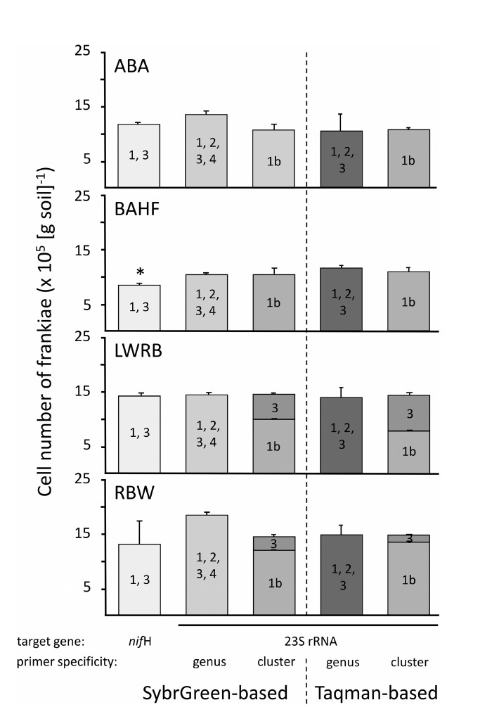

Sybr Green- and TaqMan-based qPCR approaches for Frankia clusters
This study expanded molecular quantification of Frankia by developing cluster-specific qPCR approaches for clusters 2 and 4, complementing existing assays for clusters 1 and 3. The resulting framework allowed the major taxonomic groups within the genus to be assessed together rather than focusing only on the historically better-characterized clusters.
Applying these assays to different soils showed that vegetation was associated with striking differences in detectable Frankia community composition. Prairie soils contained representatives of all four major clusters and showed broader diversity, while soils beneath some host and nonhost trees were dominated by a much more restricted subset of populations.
